To filter paste in here:
aawiki

 abwiki
abwiki
 acewiki
acewiki
 advisorswiki
advisorswiki
 adywiki
adywiki
 afwiki
afwiki afwikibooks
afwikibooks

 afwikiquote
afwikiquote

 afwiktionary
afwiktionary
 akwiki
akwiki
 alswiki
alswiki altwiki
altwiki

 amiwiki
amiwiki

 amwiki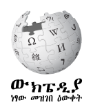
amwiki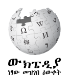
 amwikimedia
amwikimedia
 amwiktionaryangwiki
amwiktionaryangwiki
 angwiktionary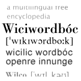anwiki
angwiktionary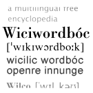anwiki
 anwiktionary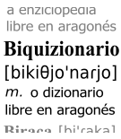arbcom_cswiki
anwiktionary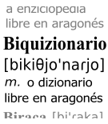arbcom_cswiki arbcom_dewiki
arbcom_dewiki arbcom_enwiki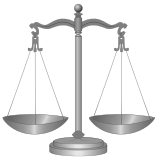
arbcom_enwiki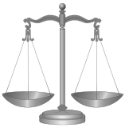 arbcom_fiwiki
arbcom_fiwiki arbcom_nlwiki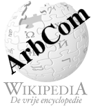
arbcom_nlwiki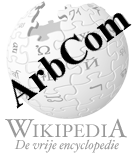 arbcom_ruwiki
arbcom_ruwiki
 arcwiki
arcwiki

 arwiki
arwiki arwikibooksarwikimedia
arwikibooksarwikimedia arwikinews
arwikinews
 arwikiquotearwikisource
arwikiquotearwikisource
 arwikiversity
arwikiversity
 arwiktionaryarywiki
arwiktionaryarywiki

 arzwiki
arzwiki astwiki
astwiki astwiktionaryaswiki
astwiktionaryaswiki
 aswikisource
aswikisource atjwiki
atjwiki
 auditcomwiki
auditcomwiki
 avkwiki
avkwiki
 avwiki
avwiki
 awawiki
awawiki

 aywiki
aywiki
 aywiktionaryazbwiki
aywiktionaryazbwiki
 azwiki
azwiki
 azwikibooksazwikiquoteazwikisource
azwikibooksazwikiquoteazwikisource azwiktionarybanwiki
azwiktionarybanwiki

 banwikisource
banwikisource
 barwiki
barwiki bat_smgwiki
bat_smgwiki
 bawiki
bawiki bawikibooksbclwiki
bawikibooksbclwiki bclwikiquote
bclwikiquote bclwiktionary
bclwiktionary bdwikimedia
bdwikimedia be_x_oldwiki
be_x_oldwiki
 betawikiversity
betawikiversity bewiki
bewiki
 bewikibooksbewikimedia
bewikibooksbewikimedia bewikiquotebewikisource
bewikiquotebewikisource bewiktionary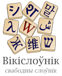bgwiki
bewiktionary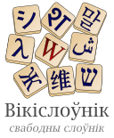bgwiki

 bgwikibooksbgwikinews
bgwikibooksbgwikinews bgwikiquotebgwikisource
bgwikiquotebgwikisource bgwiktionarybhwiki
bgwiktionarybhwiki biwiki
biwiki bjnwiki
bjnwiki
 bjnwiktionaryblkwiki
bjnwiktionaryblkwiki

 bmwiki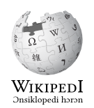
bmwiki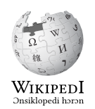
 bnwiki
bnwiki bnwikibooks
bnwikibooks
 bnwikiquote
bnwikiquote bnwikisource
bnwikisource bnwikivoyage
bnwikivoyage bnwiktionary
bnwiktionary boardgovcomwiki
boardgovcomwiki
 boardwiki
boardwiki
 bowiki
bowiki
 bpywiki
bpywiki brwiki
brwiki brwikimediabrwikiquotebrwikisource
brwikimediabrwikiquotebrwikisource brwiktionarybswiki
brwiktionarybswiki bswikibooks
bswikibooks bswikinews
bswikinews bswikiquote
bswikiquote bswikisource
bswikisource bswiktionarybugwiki
bswiktionarybugwiki
 bxrwiki
bxrwiki
 cawiki
cawiki
 cawikibookscawikimedia
cawikibookscawikimedia cawikinews
cawikinews cawikiquotecawikisource
cawikiquotecawikisource cawiktionary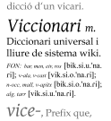cbk_zamwiki
cawiktionary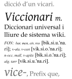cbk_zamwiki cdowiki
cdowiki cebwiki
cebwiki
 cewiki
cewiki
 chairwiki
chairwiki
 chapcomwiki
chapcomwiki checkuserwiki
checkuserwiki chrwiki
chrwiki
 chrwiktionarychwiki
chrwiktionarychwiki chywiki
chywiki
 ckbwiki
ckbwiki
 cnwikimedia
cnwikimedia collabwiki
collabwiki
 commonswiki
commonswiki
 cowiki
cowiki cowikimedia
cowikimedia cowiktionarycrhwiki
cowiktionarycrhwiki
 crwiki
crwiki
 csbwiki
csbwiki
 csbwiktionary
csbwiktionary cswiki
cswiki cswikibookscswikinews
cswikibookscswikinews cswikiquotecswikisource
cswikiquotecswikisource cswikiversity
cswikiversity cswiktionary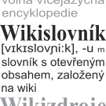cuwiki
cswiktionary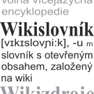cuwiki
 cvwiki
cvwiki
 cvwikibookscywiki
cvwikibookscywiki cywikibookscywikiquotecywikisource
cywikibookscywikiquotecywikisource cywiktionarydagwiki
cywiktionarydagwiki
 dawiki
dawiki
 dawikibooksdawikiquotedawikisource
dawikibooksdawikiquotedawikisource
 dawiktionarydewiki
dawiktionarydewiki dewikibooksdewikinews
dewikibooksdewikinews
 dewikiquote
dewikiquote dewikisource
dewikisource
 dewikiversity
dewikiversity dewikivoyage
dewikivoyage
 dewiktionary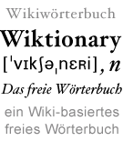dinwiki
dewiktionary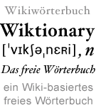dinwiki diqwiki
diqwiki
 diqwiktionarydkwikimedia
diqwiktionarydkwikimedia donatewiki
donatewiki
 dsbwiki
dsbwiki
 dtywiki
dtywiki
 dvwiki
dvwiki
 dvwiktionarydzwiki
dvwiktionarydzwiki
 ecwikimedia
ecwikimedia eewiki
eewiki
 electcomwiki
electcomwiki
 elwiki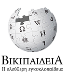
elwiki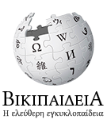
 elwikibookselwikinews
elwikibookselwikinews elwikiquoteelwikisource
elwikiquoteelwikisource elwikiversity
elwikiversity elwikivoyageelwiktionary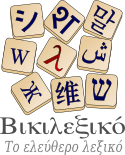emlwiki
elwikivoyageelwiktionary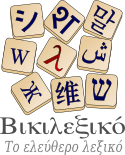emlwiki enwiki
enwiki enwikibooksenwikinews
enwikibooksenwikinews enwikiquote
enwikiquote enwikisource
enwikisource
 enwikiversity
enwikiversity
 enwikivoyage
enwikivoyage enwiktionary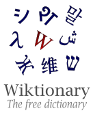eowiki
enwiktionary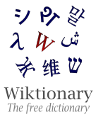eowiki
 eowikibookseowikinews
eowikibookseowikinews eowikiquoteeowikisource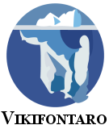
eowikiquoteeowikisource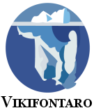 eowikivoyage
eowikivoyage eowiktionaryeswiki
eowiktionaryeswiki
 eswikibookseswikinews
eswikibookseswikinews eswikiquoteeswikisource
eswikiquoteeswikisource eswikiversity
eswikiversity eswikivoyageeswiktionary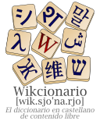
eswikivoyageeswiktionary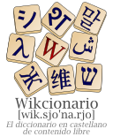 etwiki
etwiki
 etwikibooksetwikimedia
etwikibooksetwikimedia etwikiquote
etwikiquote
 etwikisource
etwikisource etwiktionary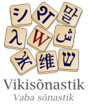euwiki
etwiktionary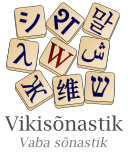euwiki euwikibookseuwikiquote
euwikibookseuwikiquote
 euwikisource
euwikisource
 euwiktionaryexecwiki
euwiktionaryexecwiki extwiki
extwiki
 fawiki
fawiki fawikibooks
fawikibooks fawikinews
fawikinews fawikiquotefawikisource
fawikiquotefawikisource fawikivoyage
fawikivoyage fawiktionary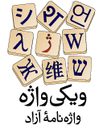
fawiktionary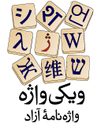 fdcwiki
fdcwiki ffwiki
ffwiki fiu_vrowiki
fiu_vrowiki
 fiwiki
fiwiki fiwikibooks
fiwikibooks fiwikimedia
fiwikimedia fiwikinews
fiwikinews fiwikiquotefiwikisource
fiwikiquotefiwikisource fiwikiversity
fiwikiversity fiwikivoyagefiwiktionaryfjwiki
fiwikivoyagefiwiktionaryfjwiki fjwiktionaryfoundationwiki
fjwiktionaryfoundationwiki
 fowiki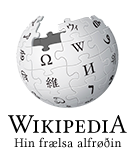
fowiki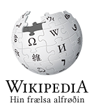
 fowikisource
fowikisource fowiktionaryfrpwiki
fowiktionaryfrpwiki frrwiki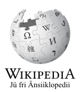
frrwiki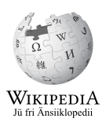 frwiki
frwiki
 frwikibooks
frwikibooks frwikinews
frwikinews
 frwikiquote
frwikiquote frwikisource
frwikisource frwikiversity
frwikiversity frwikivoyagefrwiktionary
frwikivoyagefrwiktionary
 furwiki
furwiki
 fywiki
fywiki
 fywikibooksfywiktionarygagwiki
fywikibooksfywiktionarygagwiki
 ganwiki
ganwiki
 gawiki
gawiki
 gawiktionary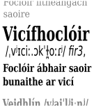gcrwiki
gawiktionary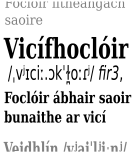gcrwiki

 gdwiki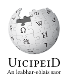
gdwiki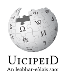
 gdwiktionarygewikimedia
gdwiktionarygewikimedia glkwiki
glkwiki
 glwiki
glwiki glwikibooksglwikiquoteglwikisource
glwikibooksglwikiquoteglwikisource glwiktionarygnwiki
glwiktionarygnwiki
 gnwiktionarygomwiki
gnwiktionarygomwiki gomwiktionary
gomwiktionary gorwiki
gorwiki gotwikigrantswiki
gotwikigrantswiki grwikimedia
grwikimedia
 guwiki
guwiki
 guwikiquoteguwikisource
guwikiquoteguwikisource guwiktionary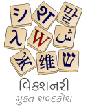guwwiki
guwiktionary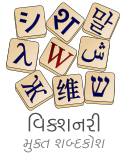guwwiki guwwiktionary
guwwiktionary gvwiki
gvwiki gvwiktionaryhakwiki
gvwiktionaryhakwiki hawiki
hawiki hawiktionaryhawwiki
hawiktionaryhawwiki
 hewiki
hewiki hewikibookshewikinews
hewikibookshewikinews hewikiquotehewikisource
hewikiquotehewikisource hewikivoyage
hewikivoyage
 hewiktionary
hewiktionary hifwiki
hifwiki hifwiktionaryhiwiki
hifwiktionaryhiwiki hiwikibookshiwikimedia
hiwikibookshiwikimedia
 hiwikiquotehiwikisource
hiwikiquotehiwikisource hiwikiversity
hiwikiversity hiwikivoyagehiwiktionaryhrwiki
hiwikivoyagehiwiktionaryhrwiki
 hrwikibookshrwikiquote
hrwikibookshrwikiquote hrwikisource
hrwikisource hrwiktionaryhsbwiki
hrwiktionaryhsbwiki
 hsbwiktionaryhtwiki
hsbwiktionaryhtwiki
 huwiki
huwiki huwikibookshuwikiquotehuwikisource
huwikibookshuwikiquotehuwikisource huwiktionary
huwiktionary hywiki
hywiki
 hywikibookshywikiquotehywikisource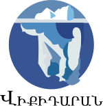
hywikibookshywikiquotehywikisource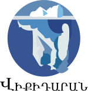 hywiktionary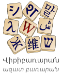hywwiki
hywiktionary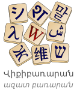hywwiki
 iawiki
iawiki iawikibooks
iawikibooks iawiktionary
iawiktionary id_internalwikimedia
id_internalwikimedia idwiki
idwiki idwikibooksidwikimedia
idwikibooksidwikimedia idwikiquoteidwikisource
idwikiquoteidwikisource idwiktionary
idwiktionary iegcomwiki
iegcomwiki iewiki
iewiki iewiktionary
iewiktionary igwiki
igwiki igwikiquote
igwikiquote igwiktionaryikwiki
igwiktionaryikwiki
 ilowiki
ilowiki
 ilwikimedia
ilwikimedia
 incubatorwiki
incubatorwiki

 inhwiki
inhwiki
 internalwiki
internalwiki
 iowiki
iowiki
 iowiktionaryiswiki
iowiktionaryiswiki iswikibooksiswikiquoteiswikisource
iswikibooksiswikiquoteiswikisource iswiktionaryitwiki
iswiktionaryitwiki
 itwikibooksitwikinews
itwikibooksitwikinews itwikiquoteitwikisource
itwikiquoteitwikisource itwikiversity
itwikiversity itwikivoyageitwiktionaryiuwiki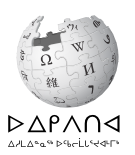
itwikivoyageitwiktionaryiuwiki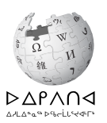
 iuwiktionaryjamwiki
iuwiktionaryjamwiki jawiki
jawiki
 jawikibooksjawikinews
jawikibooksjawikinews jawikiquotejawikisource
jawikiquotejawikisource jawikiversity
jawikiversity jawikivoyagejawiktionaryjbowiki
jawikivoyagejawiktionaryjbowiki jbowiktionary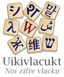jvwiki
jbowiktionary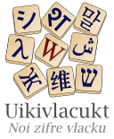jvwiki jvwikisource
jvwikisource
 jvwiktionary
jvwiktionary
 kaawiki
kaawiki kabwiki
kabwiki kawiki
kawiki
 kawikibookskawikiquotekawiktionary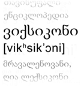kbdwiki
kawikibookskawikiquotekawiktionary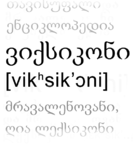kbdwiki
 kbpwiki
kbpwiki
 kcgwiki
kcgwiki kgwiki
kgwiki kiwiki
kiwiki kkwiki
kkwiki
 kkwikibookskkwiktionaryklwiki
kkwikibookskkwiktionaryklwiki klwiktionarykmwiki
klwiktionarykmwiki
 kmwikibookskmwiktionary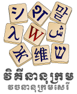knwiki
kmwikibookskmwiktionary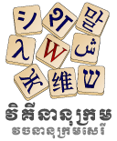knwiki
 knwikiquoteknwikisource
knwikiquoteknwikisource
 knwiktionarykoiwiki
knwiktionarykoiwiki kowiki
kowiki
 kowikibookskowikinews
kowikibookskowikinews kowikiquotekowikisource
kowikiquotekowikisource kowikiversity
kowikiversity kowiktionary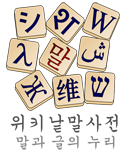krcwiki
kowiktionary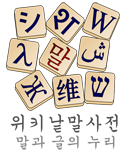krcwiki kshwiki
kshwiki
 kswiki
kswiki
 kswiktionary
kswiktionary kuwiki
kuwiki
 kuwikibookskuwikiquotekuwiktionary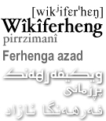kvwiki
kuwikibookskuwikiquotekuwiktionary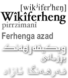kvwiki
 kwwiki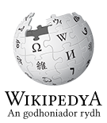
kwwiki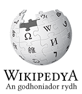
 kwwiktionarykywiki
kwwiktionarykywiki
 kywikibookskywikiquotekywiktionary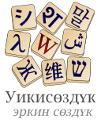labswiki
kywikibookskywikiquotekywiktionary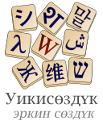labswiki ladwiki
ladwiki
 lawiki
lawiki
 lawikibooks
lawikibooks lawikiquotelawikisource
lawikiquotelawikisource lawiktionarylbewiki
lawiktionarylbewiki lbwiki
lbwiki lbwiktionarylegalteamwiki
lbwiktionarylegalteamwiki lezwiki
lezwiki lfnwiki
lfnwiki

 lgwiki
lgwiki
 lijwiki
lijwiki
 lijwikisource
lijwikisource liwiki
liwiki liwikibooksliwikinews
liwikibooksliwikinews liwikiquoteliwikisource
liwikiquoteliwikisource liwiktionarylldwiki
liwiktionarylldwiki
 lmowiki
lmowiki lmowiktionary
lmowiktionary lnwiki
lnwiki lnwiktionaryloginwiki
lnwiktionaryloginwiki
 lowiki
lowiki
 lowiktionarylrcwiki
lowiktionarylrcwiki
 ltgwiki
ltgwiki
 ltwiki
ltwiki
 ltwikibooksltwikiquoteltwikisource
ltwikibooksltwikiquoteltwikisource ltwiktionary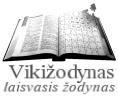lvwiki
ltwiktionary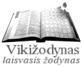lvwiki
 lvwiktionary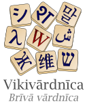madwiki
lvwiktionary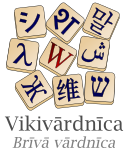madwiki

 maiwiki
maiwiki
 maiwikimedia
maiwikimedia map_bmswiki
map_bmswiki mdfwiki
mdfwiki
 metawiki
metawiki

 mgwiki
mgwiki
 mgwikibooks
mgwikibooks mgwiktionary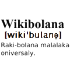mhrwiki
mgwiktionary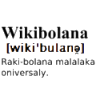mhrwiki
 minwiki
minwiki
 minwiktionary
minwiktionary miwiki
miwiki miwiktionarymkwiki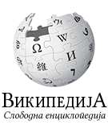
miwiktionarymkwiki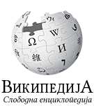 mkwikibooksmkwikimedia
mkwikibooksmkwikimedia mkwikisource
mkwikisource mkwiktionary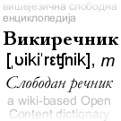mlwiki
mkwiktionary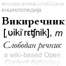mlwiki
 mlwikibooksmlwikiquotemlwikisource
mlwikibooksmlwikiquotemlwikisource mlwiktionary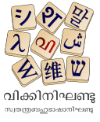mniwiki
mlwiktionary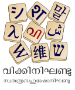mniwiki

 mniwiktionary
mniwiktionary
 mnwiki
mnwiki
 mnwiktionarymnwwiki
mnwiktionarymnwwiki

 mnwwiktionary
mnwwiktionary movementroleswiki
movementroleswiki
 mrjwiki
mrjwiki
 mrwiki
mrwiki mrwikibooksmrwikiquotemrwikisource
mrwikibooksmrwikiquotemrwikisource mrwiktionarymswiki
mrwiktionarymswiki mswikibooksmswiktionarymtwiki
mswikibooksmswiktionarymtwiki
 mtwiktionarymwlwiki
mtwiktionarymwlwiki
 mxwikimedia
mxwikimedia myvwiki
myvwiki
 mywiki
mywiki
 mywiktionarymznwiki
mywiktionarymznwiki

 nahwiki
nahwiki
 nahwiktionarynapwiki
nahwiktionarynapwiki napwikisource
napwikisource nawiki
nawiki nawiktionarynds_nlwiki
nawiktionarynds_nlwiki ndswiki
ndswiki ndswiktionarynewiki
ndswiktionarynewiki
 newikibooksnewiktionarynewwiki
newikibooksnewiktionarynewwiki
 ngwikimedia
ngwikimedia
 niawiki
niawiki
 niawiktionary
niawiktionary nlwiki
nlwiki nlwikibooksnlwikimedia
nlwikibooksnlwikimedia nlwikinews
nlwikinews nlwikiquote
nlwikiquote nlwikisource
nlwikisource nlwikivoyagenlwiktionary
nlwikivoyagenlwiktionary nnwiki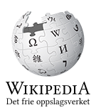
nnwiki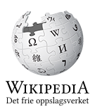 nnwikiquotennwiktionarynoboard_chapterswikimedia
nnwikiquotennwiktionarynoboard_chapterswikimedia nostalgiawiki
nostalgiawiki novwiki
novwiki
 nowiki
nowiki nowikibooksnowikimedia
nowikibooksnowikimedia nowikinews
nowikinews nowikiquotenowikisource
nowikiquotenowikisource
 nowiktionarynqowiki
nowiktionarynqowiki

 nrmwiki
nrmwiki
 nsowiki
nsowiki nvwiki
nvwiki
 nycwikimedia
nycwikimedia nywiki
nywiki ocwiki
ocwiki
 ocwikibooksocwiktionaryolowiki
ocwikibooksocwiktionaryolowiki
 ombudsmenwiki
ombudsmenwiki omwiki
omwiki omwiktionaryorwiki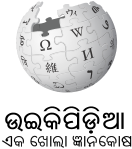
omwiktionaryorwiki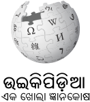
 orwikisource
orwikisource orwiktionaryoswiki
orwiktionaryoswiki
 otrs_wikiwiki
otrs_wikiwiki outreachwiki
outreachwiki
 pagwiki
pagwiki pamwiki
pamwiki papwiki
papwiki
 pawiki
pawiki
 pawikibookspawikisource
pawikibookspawikisource pawiktionarypcdwiki
pawiktionarypcdwiki
 pcmwiki
pcmwiki
 pdcwiki
pdcwiki pflwiki
pflwiki pihwiki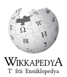
pihwiki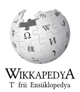
 piwiki
piwiki plwiki
plwiki plwikibooksplwikimedia
plwikibooksplwikimedia plwikinews
plwikinews
 plwikiquoteplwikisource
plwikiquoteplwikisource plwikivoyageplwiktionary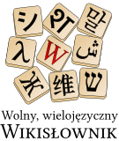
plwikivoyageplwiktionary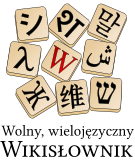 pmswiki
pmswiki pmswikisource
pmswikisource pnbwiki
pnbwiki
 pnbwiktionarypntwiki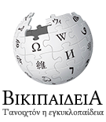
pnbwiktionarypntwiki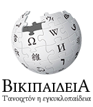
 projectcomwiki
projectcomwiki
 pswikipswikivoyage
pswikipswikivoyage pswiktionaryptwiki
pswiktionaryptwiki ptwikibooksptwikimedia
ptwikibooksptwikimedia ptwikinews
ptwikinews
 ptwikiquoteptwikisource
ptwikiquoteptwikisource ptwikiversity
ptwikiversity ptwikivoyageptwiktionarypunjabiwikimedia
ptwikivoyageptwiktionarypunjabiwikimedia pwnwiki
pwnwiki

 quwiki
quwiki quwiktionary
quwiktionary rmwiki
rmwiki
 rmywiki
rmywiki
 rnwiki
rnwiki roa_rupwiki
roa_rupwiki roa_rupwiktionary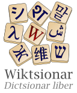roa_tarawiki
roa_rupwiktionary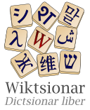roa_tarawiki
 romdwikimedia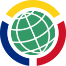
romdwikimedia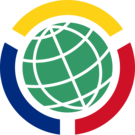 rowiki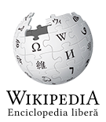
rowiki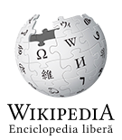 rowikibooksrowikinews
rowikibooksrowikinews rowikiquote
rowikiquote rowikisource
rowikisource rowikivoyagerowiktionary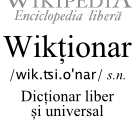rswikimedia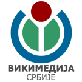
rowikivoyagerowiktionary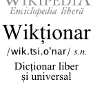rswikimedia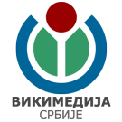 ruewiki
ruewiki
 ruwiki
ruwiki
 ruwikibooksruwikimedia
ruwikibooksruwikimedia ruwikinews
ruwikinews
 ruwikiquoteruwikisource
ruwikiquoteruwikisource
 ruwikiversity
ruwikiversity ruwikivoyage
ruwikivoyage ruwiktionary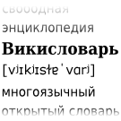
ruwiktionary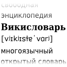 rwwiki
rwwiki rwwiktionarysahwiki
rwwiktionarysahwiki
 sahwikiquote
sahwikiquote sahwikisource
sahwikisource satwiki
satwiki
 sawiki
sawiki
 sawikibookssawikiquotesawikisource
sawikibookssawikiquotesawikisource sawiktionaryscnwiki
sawiktionaryscnwiki scnwiktionaryscowiki
scnwiktionaryscowiki
 scwiki
scwiki
 sdwikisdwiktionary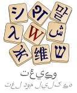searchcomwiki
sdwikisdwiktionary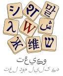searchcomwiki sewiki
sewiki sewikimedia
sewikimedia sgwiki
sgwiki
 sgwiktionaryshiwiki
sgwiktionaryshiwiki

 shnwiki
shnwiki
 shnwikivoyage
shnwikivoyage shnwiktionary
shnwiktionary shwiki
shwiki
 shwiktionaryshywiktionary
shwiktionaryshywiktionary simplewiki
simplewiki simplewiktionarysiwiki
simplewiktionarysiwiki
 siwikibookssiwiktionaryskrwiki
siwikibookssiwiktionaryskrwiki

 skrwiktionaryskwiki
skrwiktionaryskwiki skwikibooksskwikiquote
skwikibooksskwikiquote skwikisource
skwikisource
 skwiktionaryslwiki
skwiktionaryslwiki
 slwikibooksslwikiquoteslwikisource
slwikibooksslwikiquoteslwikisource slwikiversity
slwikiversity
 slwiktionarysmnwiki
slwiktionarysmnwiki
 smwiki
smwiki smwiktionarysnwiki
smwiktionarysnwiki
 sourceswiki
sourceswiki
 sowiki
sowiki sowiktionaryspcomwiki
sowiktionaryspcomwiki specieswiki
specieswiki

 sqwiki
sqwiki sqwikibookssqwikinews
sqwikibookssqwikinews sqwikiquotesqwiktionarysrnwiki
sqwikiquotesqwiktionarysrnwiki srwiki
srwiki
 srwikibookssrwikinews
srwikibookssrwikinews srwikiquotesrwikisource
srwikiquotesrwikisource srwiktionarysswiki
srwiktionarysswiki sswiktionarystewardwiki
sswiktionarystewardwiki stqwiki
stqwiki stwiki
stwiki stwiktionarysuwiki
stwiktionarysuwiki suwikiquotesuwiktionarysvwiki
suwikiquotesuwiktionarysvwiki svwikibookssvwikinews
svwikibookssvwikinews
 svwikiquotesvwikisource
svwikiquotesvwikisource svwikiversity
svwikiversity svwikivoyagesvwiktionaryswwiki
svwikivoyagesvwiktionaryswwiki swwiktionarysysop_itwiki
swwiktionarysysop_itwiki
 szlwiki
szlwiki
 szywiki
szywiki

 tawiki
tawiki
 tawikibookstawikinews
tawikibookstawikinews tawikiquotetawikisource
tawikiquotetawikisource tawiktionarytaywiki
tawiktionarytaywiki

 tcywiki
tcywiki
 techconductwiki
techconductwiki test2wiki
test2wiki
 tetwiki
tetwiki tewiki
tewiki
 tewikibookstewikiquote
tewikibookstewikiquote tewikisource
tewikisource tewiktionarytgwiki
tewiktionarytgwiki
 tgwikibookstgwiktionarythankyouwiki
tgwikibookstgwiktionarythankyouwiki thwikithwikibooksthwikiquotethwikisource
thwikithwikibooksthwikiquotethwikisource thwiktionarytiwiki
thwiktionarytiwiki

 tiwiktionary
tiwiktionary tkwiki
tkwiki
 tkwiktionarytlwiki
tkwiktionarytlwiki tlwikibookstlwikiquote
tlwikibookstlwikiquote tlwiktionarytnwiki
tlwiktionarytnwiki
 tnwiktionarytowiki
tnwiktionarytowiki tpiwiki
tpiwiki tpiwiktionarytrvwiki
tpiwiktionarytrvwiki

 trwiki
trwiki
 trwikibookstrwikimedia
trwikibookstrwikimedia trwikinews
trwikinews trwikiquote
trwikiquote trwikisource
trwikisource trwikivoyage
trwikivoyage
 trwiktionarytswiki
trwiktionarytswiki
 tswiktionaryttwiki
tswiktionaryttwiki
 ttwikibooksttwiktionarytumwiki
ttwikibooksttwiktionarytumwiki

 twwikityvwiki
twwikityvwiki tywiki
tywiki
 uawikimedia
uawikimedia udmwiki
udmwiki ugwiki
ugwiki
 ugwiktionaryukwiki
ugwiktionaryukwiki
 ukwikibooksukwikinews
ukwikibooksukwikinews ukwikiquoteukwikisource
ukwikiquoteukwikisource
 ukwikivoyageukwiktionaryurwikiurwikibooksurwikiquoteurwiktionaryuzwikiuzwikiquoteuzwiktionaryvecwiki
ukwikivoyageukwiktionaryurwikiurwikibooksurwikiquoteurwiktionaryuzwikiuzwikiquoteuzwiktionaryvecwiki vecwikisource
vecwikisource vecwiktionaryvepwiki
vecwiktionaryvepwiki
 vewiki
vewiki viwiki
viwiki viwikibooks
viwikibooks viwikiquote
viwikiquote viwikisource
viwikisource viwikivoyage
viwikivoyage viwiktionaryvlswiki
viwiktionaryvlswiki votewiki
votewiki
 vowiki
vowiki
 vowiktionarywarwiki
vowiktionarywarwiki wawiki
wawiki
 wawikisource
wawikisource
 wawiktionarywbwikimedia
wawiktionarywbwikimedia wg_enwiki
wg_enwiki wikidatawiki
wikidatawiki

 wikimania2017wiki
wikimania2017wiki
 wikimania2018wiki
wikimania2018wiki
 wikimaniateamwiki
wikimaniateamwiki wikimaniawikiwowiki
wikimaniawikiwowiki wowikiquotewowiktionarywuuwiki
wowikiquotewowiktionarywuuwiki
 xalwiki
xalwiki
 xhwiki
xhwiki xmfwiki
xmfwiki
 yiwiki
yiwiki
 yiwikisource
yiwikisource yiwiktionary
yiwiktionary yowiki
yowiki yuewiktionaryzawiki
yuewiktionaryzawiki
 zeawiki
zeawiki zh_classicalwiki
zh_classicalwiki
 zh_min_nanwiki
zh_min_nanwiki zh_min_nanwikisource
zh_min_nanwikisource zh_min_nanwiktionaryzh_yuewiki
zh_min_nanwiktionaryzh_yuewiki
 zhwiki
zhwiki


 zhwikibookszhwikinews
zhwikibookszhwikinews zhwikiquotezhwikisource
zhwikiquotezhwikisource zhwikiversity
zhwikiversity zhwikivoyagezhwiktionaryzuwiki
zhwikivoyagezhwiktionaryzuwiki
 zuwiktionaryaawikibooksaawiktionaryabwiktionaryadvisorywiki
zuwiktionaryaawikibooksaawiktionaryabwiktionaryadvisorywiki akwikibooks
akwikibooks akwiktionaryamwikiquoteangwikibooks
akwiktionaryamwikiquoteangwikibooks angwikiquote
angwikiquote angwikisource
angwikisource apiportalwiki
apiportalwiki
 astwikibooks
astwikibooks astwikiquoteaswikibooks
astwikiquoteaswikibooks aswiktionaryavwiktionaryaywikibooks
aswiktionaryavwiktionaryaywikibooks bhwiktionarybiwikibooksbiwiktionarybmwikibooksbmwikiquotebmwiktionarybowikibooksbowiktionarychowiki
bhwiktionarybiwikibooksbiwiktionarybmwikibooksbmwikiquotebmwiktionarybowikibooksbowiktionarychowiki chwikibookschwiktionarycowikibookscowikiquotecrwikiquotecrwiktionarydzwiktionarygawikibooksgawikiquotegnwikibooksgotwikibooksguwikibookshowiki
chwikibookschwiktionarycowikibookscowikiquotecrwikiquotecrwiktionarydzwiktionarygawikibooksgawikiquotegnwikibooksgotwikibooksguwikibookshowiki htwikisource
htwikisource huwikinews
huwikinews hzwiki
hzwiki iewikibooks
iewikibooks iiwiki
iiwiki ikwiktionarykjwiki
ikwiktionarykjwiki kkwikiquoteknwikibookskrwiki
kkwikiquoteknwikibookskrwiki krwikiquotekswikibookskswikiquotekwwikiquotelabtestwiki
krwikiquotekswikibookskswikiquotekwwikiquotelabtestwiki lbwikibookslbwikiquotelnwikibookslvwikibooksmediawikiwiki
lbwikibookslbwikiquotelnwikibookslvwikibooksmediawikiwiki

 mhwiki
mhwiki mhwiktionarymiwikibooks
mhwiktionarymiwikibooks mnwikibooksmuswiki
mnwikibooksmuswiki mywikibooksnahwikibooksnawikibooksnawikiquotendswikibooksndswikiquotengwiki
mywikibooksnahwikibooksnawikibooksnawikiquotendswikibooksndswikiquotengwiki nzwikimedia
nzwikimedia officewiki
officewiki pa_uswikimedia
pa_uswikimedia piwiktionarypswikibooksqualitywiki
piwiktionarypswikibooksqualitywiki quwikibooksquwikiquotermwikibooksrmwiktionaryrnwiktionaryscwiktionarysdwikinews
quwikibooksquwikiquotermwikibooksrmwiktionaryrnwiktionaryscwiktionarysdwikinews sewikibookssimplewikibooks
sewikibookssimplewikibooks simplewikiquotesnwiktionarystrategywiki
simplewikiquotesnwiktionarystrategywiki suwikibooksswwikibookstenwiki
suwikibooksswwikibookstenwiki testcommonswiki
testcommonswiki testwikitestwikidatawiki
testwikitestwikidatawiki thwikinews
thwikinews tkwikibookstkwikiquotetowiktionarytransitionteamwiki
tkwikibookstkwikiquotetowiktionarytransitionteamwiki ttwikiquotetwwiktionaryugwikibooksugwikiquoteusabilitywiki
ttwikiquotetwwiktionaryugwikibooksugwikiquoteusabilitywiki uzwikibooksvowikibooksvowikiquotewawikibookswikimania2005wiki
uzwikibooksvowikibooksvowikiquotewawikibookswikimania2005wiki wikimania2006wiki
wikimania2006wiki wikimania2007wiki
wikimania2007wiki wikimania2008wiki
wikimania2008wiki wikimania2009wiki
wikimania2009wiki wikimania2010wiki
wikimania2010wiki wikimania2011wiki
wikimania2011wiki wikimania2012wiki
wikimania2012wiki wikimania2013wiki
wikimania2013wiki wikimania2014wiki
wikimania2014wiki wikimania2015wiki
wikimania2015wiki wikimania2016wiki
wikimania2016wiki xhwikibooksxhwiktionaryyowikibooksyowiktionaryzawikibookszawikiquotezawiktionaryzh_min_nanwikibookszh_min_nanwikiquotezuwikibooks
xhwikibooksxhwiktionaryyowikibooksyowiktionaryzawikibookszawikiquotezawiktionaryzh_min_nanwikibookszh_min_nanwikiquotezuwikibooks